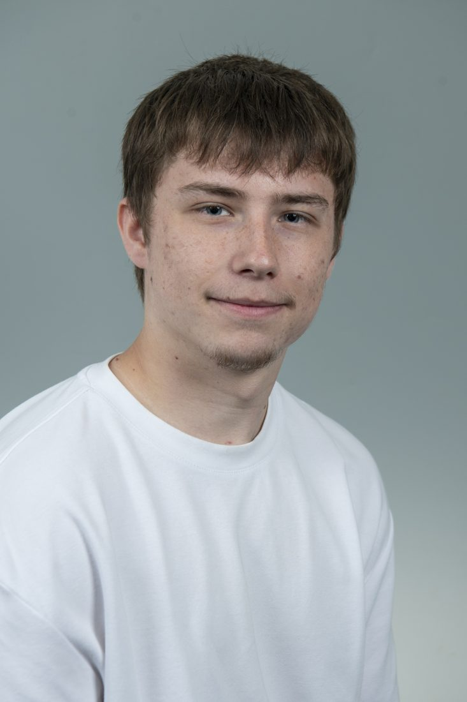
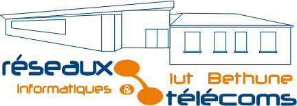

Sept. 2026 → 2029
Élève ingénieur FISA, groupe Télécom En cours
IMT Nord Europe · cycle ingénieur par apprentissage, promotion 2029. En entreprise : apprenti chef de projet chez Axians Infras Nord.
Élève ingénieur en télécommunications, diplômé du BUT R&T Cybersécurité et apprenti chef de projet chez Axians. Je pilote le déploiement de sites 4G / 5G pour Free Mobile, de la visite de diagnostic jusqu'à la recette.


de BUT R&T à l'IUT de Béthune, parcours Cybersécurité
projets d'équipe, du réseau d'entreprise à la VoIP
C10 confiés par Free Mobile à mon équipe chez Axians
diplôme d'ingénieur IMT Nord Europe, en alternance
Trois ans de BUT Réseaux & Télécommunications, un an et demi dans l'équipe Free / Cellnex d'Axians, et maintenant trois ans d'école d'ingénieur, toujours en alternance dans la même entreprise.
IMT Nord Europe · cycle ingénieur par apprentissage, promotion 2029. En entreprise : apprenti chef de projet chez Axians Infras Nord.
Axians Infras Nord, Gavrelle (62) · pilotage du projet C10 de modernisation radio pour Free Mobile, DOE, visites finales, injections software, Orion et recettes.
IUT de Béthune, Université d'Artois · diplôme obtenu en 2026. Neuf SAE, un stage et une année d'alternance.
Axians Infras Nord · dix semaines de stage de 2e année (DOE, préparation d'interventions, levées de réserves), suivies de deux mois d'intérim avant la signature de l'alternance.
Après le BUT, j'ai choisi le cycle ingénieur par apprentissage en restant chez Axians. Trois ans pour consolider mes compétences sur le terrain et prendre une vision plus complète des projets télécoms : technique, organisation et stratégie.
Donner une base d'ingénieur à ce que je pratique sur le terrain : réseaux, radio mobile, architectures télécoms.
Passer de conducteur de travaux à chef de projet : planification, budgets, coordination client et sous-traitants.
Comprendre les enjeux organisationnels et stratégiques d'un déploiement, au-delà d'un site ou d'un chantier.
BUT Réseaux & Télécommunications, parcours Cybersécurité, à l'Université d'Artois. Une formation par projets : chaque année s'organise autour de SAE qui valident les compétences du programme national.
Réseaux, systèmes, programmation et télécoms. Premier projet d'entreprise simulé : la Pépinière, de l'infrastructure jusqu'à l'intégration applicative.
Entrée dans le parcours Cybersécurité : transmission radio, applications communicantes, sécurisation d'un SI multi-sites. Stage de dix semaines chez Axians.
Une année en alternance chez Axians et deux projets de solution complète : salles de TP en conteneurs et services de communication temps réel.
Cliquez une compétence pour voir les SAE qui la prouvent, puis une SAE pour ouvrir sa fiche.
Axians Infras Nord, marque TIC de VINCI Energies, est maître d'œuvre des sites mobiles de Free dans les Hauts-de-France. Je travaille dans l'équipe qui les fait passer de la commande à la mise en service.
Après un an comme conducteur de travaux, je prends en charge le pilotage de projets de déploiement pour Free Mobile : sites neufs, montées en technologie et modernisations radio.
Un C10 consiste à remplacer les modules radio d'ancienne génération d'un site Free Mobile existant par des modules plus performants, moins gourmands en énergie et prêts pour la 4G avancée et la 5G. J'ai piloté ces sites de bout en bout, sur des pylônes, des terrasses et des châteaux d'eau.
Je suis aussi le circuit financier de chaque opération : devis de sous-traitance, nacelle et plaques de roulement, commandes matériel, réception du BOQ, règlement des intervenants, puis retour des équipements déposés vers Free dans le cadre de la démarche SHIELD.
Les situations d'apprentissage et d'évaluation du BUT, regroupées par domaine. Chaque carte ouvre la fiche complète de ses SAE : contexte, réalisation, difficultés, apprentissages, note et livrables.
Une double culture : le déploiement physique du réseau mobile appris sur le terrain, et les réseaux IP, la sécurité et le logiciel appris à l'IUT.
Un projet télécom, une question sur mon parcours ou une opportunité : je réponds rapidement.